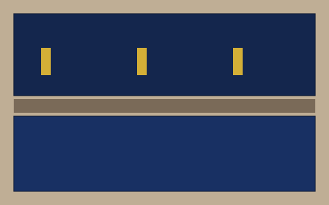

Flat Panel Cabinet Refacing: Navy Galley Kitchen
The owners had a galley kitchen with deep navy cabinets and wanted a lighter room. The navy cabinets were turned into white ones with new doors, and the whole change took four days. Call us at (555) 555 0123 for a free estimate.

Frequently asked questions
How long does the refacing process take?
Most projects take about a week from the first visit to the last handle, depending on how many doors the kitchen has.
Do you offer a warranty?
Yes, every refacing project comes with a 5-year warranty.
How long does the refacing process take?
The schedule depends on the number of doors, but a typical kitchen is ready in four to five working days.